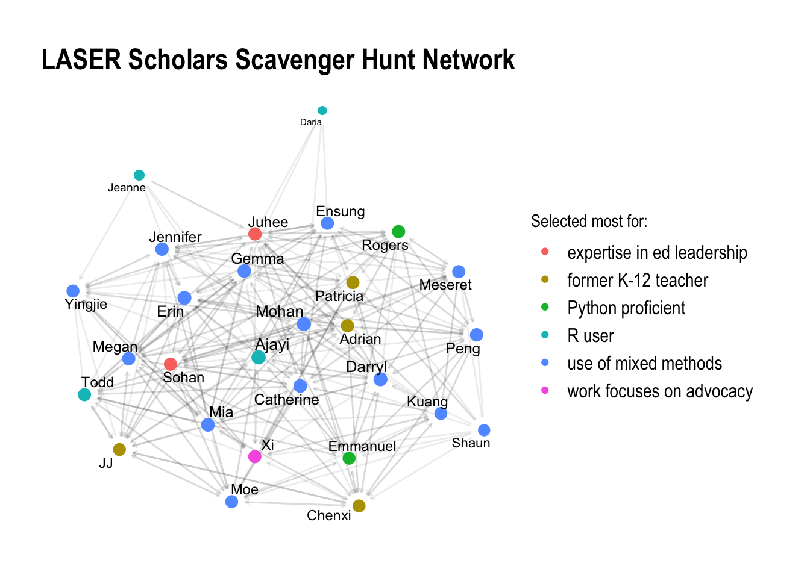

LASER Scholars Scavenger Hunt
Sociogram
Code
Code
# Load required libraries
library(tidyverse) # For data manipulation and visualization
library(tidygraph) # For network analysis and manipulation
library(ggraph) # For network visualization
# Load the data
scholar_nodes <- read_csv("module-0/data/scholar-nodes-2024.csv") # Load node data from CSV
scholar_edges <- read_csv("module-0/data/scholar-edges-2024.csv") # Load edge data from CSV
# Create a tidygraph object
scholar_network <- tbl_graph(nodes = scholar_nodes,
edges = scholar_edges,
directed = TRUE) # Create a directed network graph from the nodes and edges
# Plot the network
ggraph(scholar_network, layout = "stress") +
geom_edge_link(arrow = arrow(length = unit(1, 'mm')),
end_cap = circle(3, 'mm'),
start_cap = circle(3, 'mm'),
alpha = .08) + # Draw edges with arrows, adjusting transparency and end/start caps
geom_node_point(aes(size = local_size(),
color = attribute)) + # Draw nodes with size based on local size and color based on attribute
geom_node_text(aes(label = name,
size = local_size()),
repel = TRUE) + # Add node labels, with text size based on local size, using repulsion to avoid overlap
labs(title = "LASER Scholars Scavenger Hunt Network",
color = "Selected most for:") + # Add a title to the plot and set the legend title for color
scale_size_continuous(range = c(3, 5)) + # Scale the node sizes to be within a specified range
guides(size = "none") + # Remove the size legend
theme_graph() + # Apply a theme suitable for graphs
theme(plot.title = element_text(hjust = 0.5), # Center the plot title
legend.text = element_text(size = 12)) # Increase the legend text size